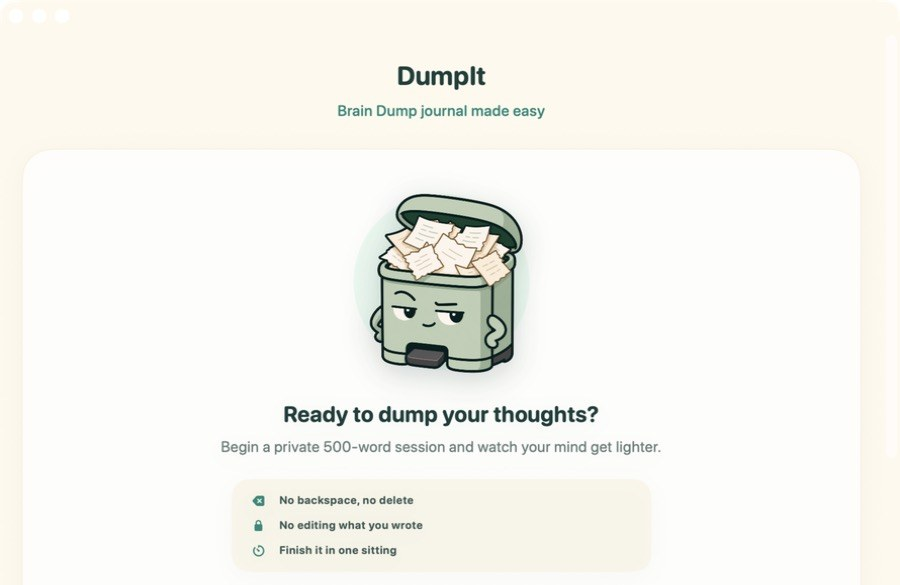
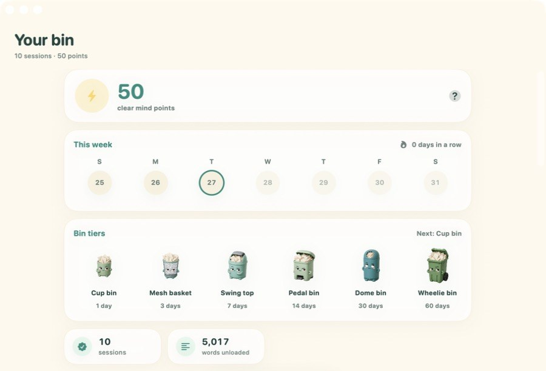

DumpIt
Brain dump journal, made easy.
Write 500 words in one sitting. Your words soften behind you as you go, and the finished session lands in a dated journal.
Download for MacmacOS 14+ · Apple silicon · Free preview · Ad-hoc signed, not notarized
Unzip and move DumpIt to Applications. Installation instructions · Source on GitHub. Build the iPhone and iPad versions with Xcode.
On the Mac


The rules
- No backspace.The delete key does nothing.
- No editing.You can't go back up the page.
- One sitting.Leave, and the dump is binned.
Keep a streak
Dump every day and your bin grows: Cup bin on day 1, then a mesh basket, a swing top, a pedal bin, a dome bin, a Wheelie bin at 60 days, a Dumpster at 100, and Industrial at 365.